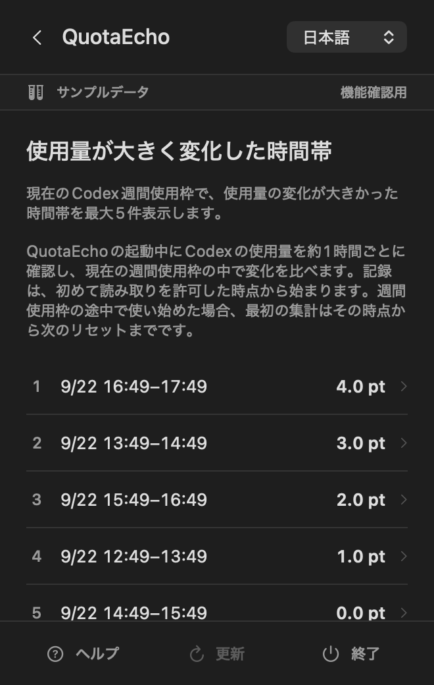
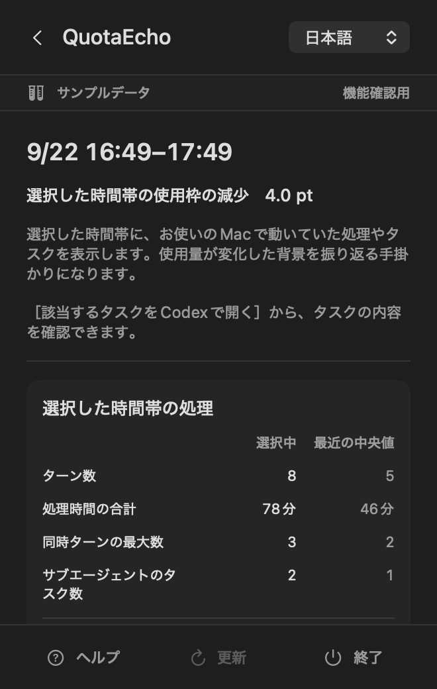
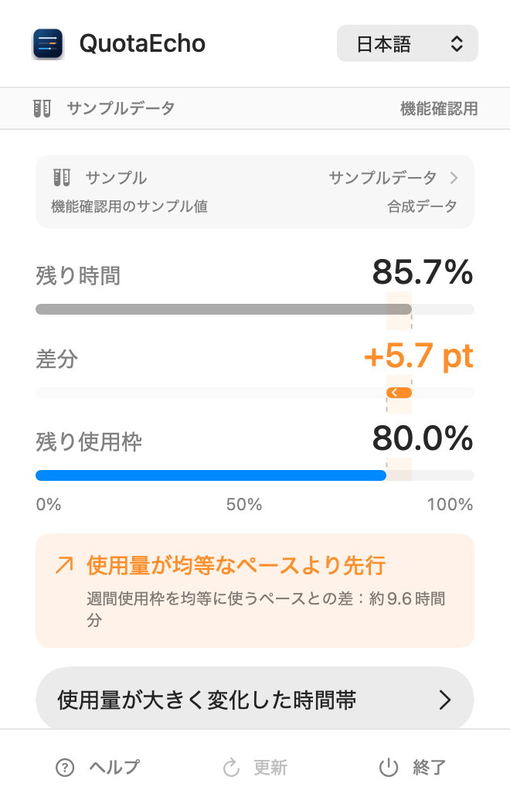

今のペースが分かりにくい
残り使用枠は見えても、リセットまでの時間と比べて余裕があるのか、使用量が先行しているのか判断しづらい。
QuotaEchoが埋めるのは、残量を知ることと、次に何をするかを決めることの間にある距離です。
残り使用枠は見えても、リセットまでの時間と比べて余裕があるのか、使用量が先行しているのか判断しづらい。
使用枠が想定以上に変化したとき、その時間にどのタスクや処理が動いていたのかを、あとから探すのに時間がかかる。
週間使用枠にまだ余裕があるなら、新しい作業を始める判断材料にしたい。残量を余らせたままリセットを迎えたくない。
観測された時間・処理・タスクを、あなたが判断するための手掛かりとして並べます。
現在のペース、変化の大きかった時間帯、その時間に観測された処理。数字から作業の振り返りまでを一続きにします。
次回リセットまでの時間と、Codexの週間使用枠の残りを0〜100%の共通目盛りで並べます。Gapを見ると、均等なペースより消費が先行しているか、余裕があるかを確認できます。
現在のCodex週間使用枠で、QuotaEchoの起動中に観測できた連続した約1時間の区間を比べ、残り使用枠が大きく減った時間帯を最大5件表示します。

選択した時間帯について、利用中のMacにあるローカル記録から、処理の回数・時間・並行して動いた様子をまとめます。関連するCodexタスクは、そのまま開いて確認できます。

QuotaEchoが示すのは、利用中のMacのローカル記録で観測できた事実です。各タスクの正確な使用量や、使用量が変化した原因を確定するものではありません。
QuotaEchoを起動すると、メニューバーに現在の状態を示すGapが表示され、詳細パネルも一度自動で開きます。その後はメニューバーの項目をクリックするだけで、残り時間・差分・残り使用枠と振り返り画面をいつでも開閉できます。
QuotaEchoはmacOSの外観設定に合わせて表示されます。明るいデスクトップでも暗い作業環境でも、同じ情報を自然な見た目で確認できます。

OpenAIへのログインを追加せず、許可されたCodexのローカル記録から必要な情報だけを読み取り、Mac内で処理します。
OpenAIのID、パスワード、APIキーをQuotaEchoへ入力する必要はありません。
許可されたCodexのローカル記録を読み取ります。Codexのタスクや記録を変更しません。
週間使用枠、タスク名、処理時刻、必要な件数をアプリ内で処理します。
アプリが読み取った情報を、株式会社Universion Closure Logicへ送信しません。
最終更新日：2026年9月22日
株式会社Universion Closure Logic（以下「当社」）が提供するmacOSアプリ「QuotaEcho」における情報の取扱いを定めます。
QuotaEchoは、利用者がmacOS上で読み取りを許可したCodexの記録から、週間使用枠、タスク名、処理日時および処理件数などのメタデータを読み取り、利用者のMac内で処理します。アプリは、これらの情報を当社へ送信しません。
OpenAIアカウントのID・パスワード、APIキー、Cookie、認証トークンおよびauth.jsonを取得しません。プロンプト、回答本文、推論、コード、ファイルパス、コマンドおよびその出力を抽出、保存、表示または送信しません。
現在の週間使用枠の比較履歴、表示言語、読み取り許可情報およびランダムに生成したローカル識別子を、アプリのSandbox内に保存します。タスク名と処理状況の集計は表示中のみ使用し、週間履歴には保存しません。
週間履歴は、新しい週間使用枠が始まると置き換えられます。QuotaEchoが保存した履歴、設定および読み取り許可は、アプリ内の「アンインストールの手順」から削除できます。この操作によってCodexのタスクや記録が削除されることはありません。
サポートへメールを送信した場合、当社は送信元メールアドレスとお問い合わせ内容を、回答および問題解決のために利用します。サポートメールは、当社が利用するメールサービス提供者によって処理される場合があります。
本サイトのコードは、広告または行動追跡を目的としたCookieや解析ツールを使用しません。安全な運用のため、ホスティングサービス提供者がIPアドレス、ブラウザ情報、アクセス日時などのサーバーログを一時的に処理する場合があります。
QuotaEchoはOpenAIとは独立して提供されるアプリです。OpenAIによる提携、後援、承認、提供または保証を意味しません。実際の利用可否、使用枠および契約内容は、OpenAIが提供する情報と条件が優先されます。
機能、法令または提供方法の変更に伴い、本ポリシーを更新することがあります。重要な変更がある場合は、このページでお知らせします。
株式会社Universion Closure Logic
support.quotaecho@universion-closure-logic.com
QuotaEchoは、株式会社Universion Closure Logicが企画・開発・提供するmacOSアプリです。OpenAIとは独立した製品として、観測できる情報をユーザー自身の判断につなげることを目指しています。
使用量が表示されない場合や読み取り許可について案内が表示された場合は、まずCodexを一度使用してから、QuotaEchoの「更新」をお試しください。
解決しない場合は、QuotaEcho Supportまでお問い合わせください。
support.quotaecho@universion-closure-logic.comお問い合わせ時にあると確認しやすい情報
パスワード、APIキー、auth.json、Codexの記録フォルダやセッションファイル、プロンプト、回答本文は送信しないでください。